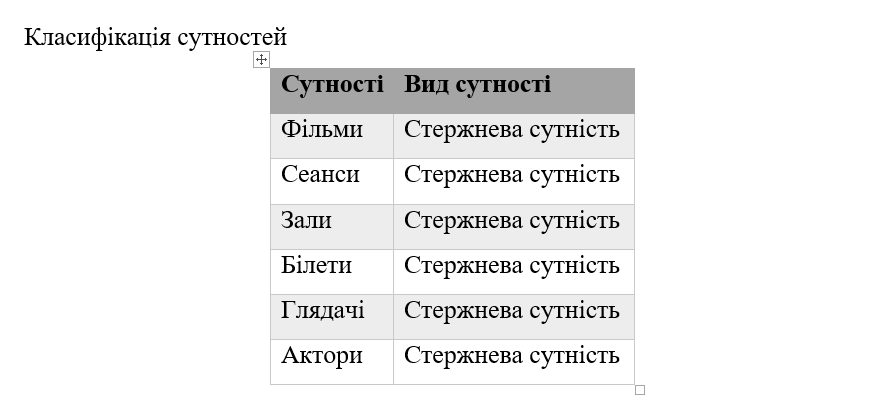
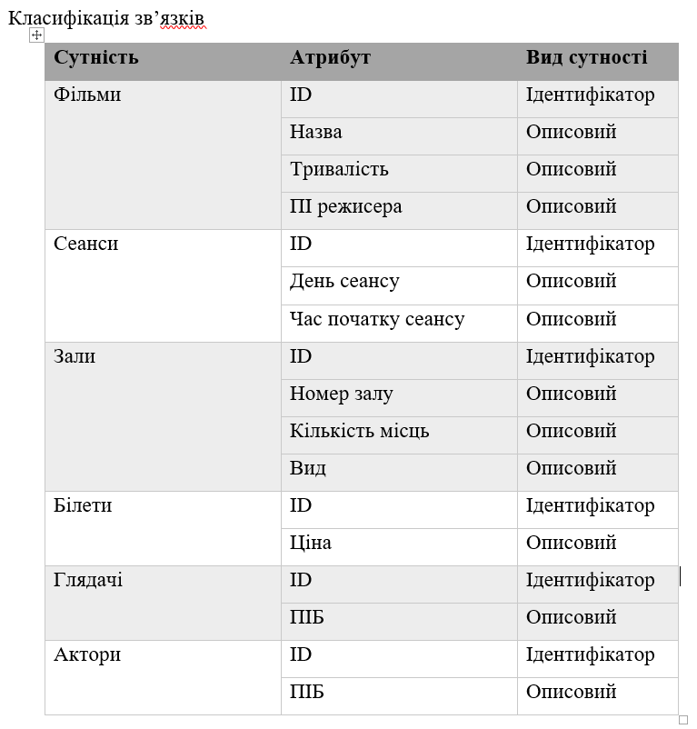
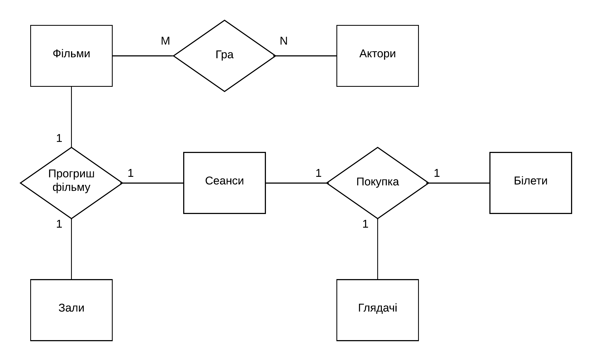
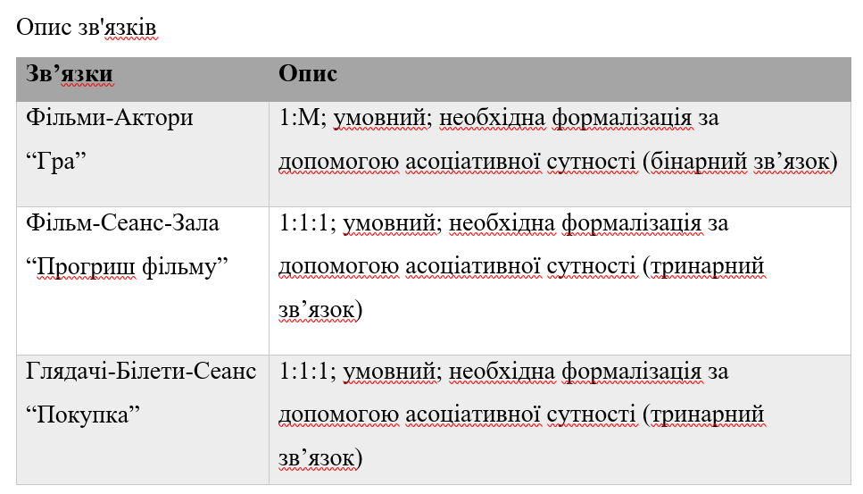
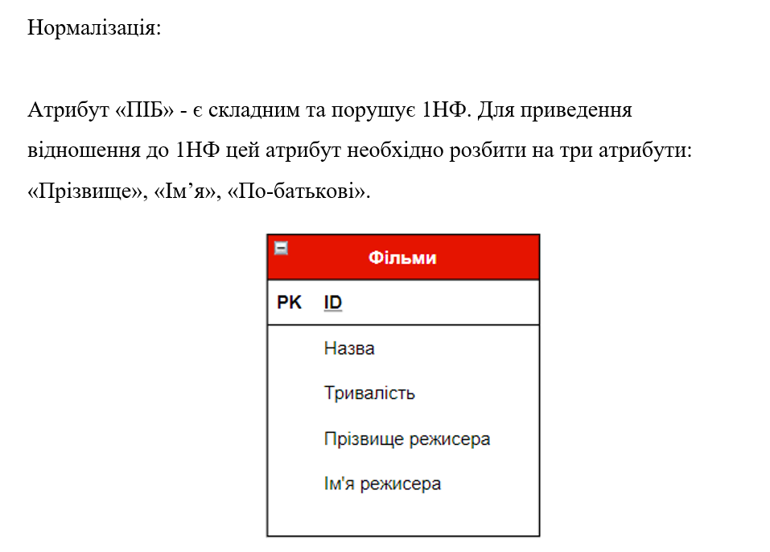
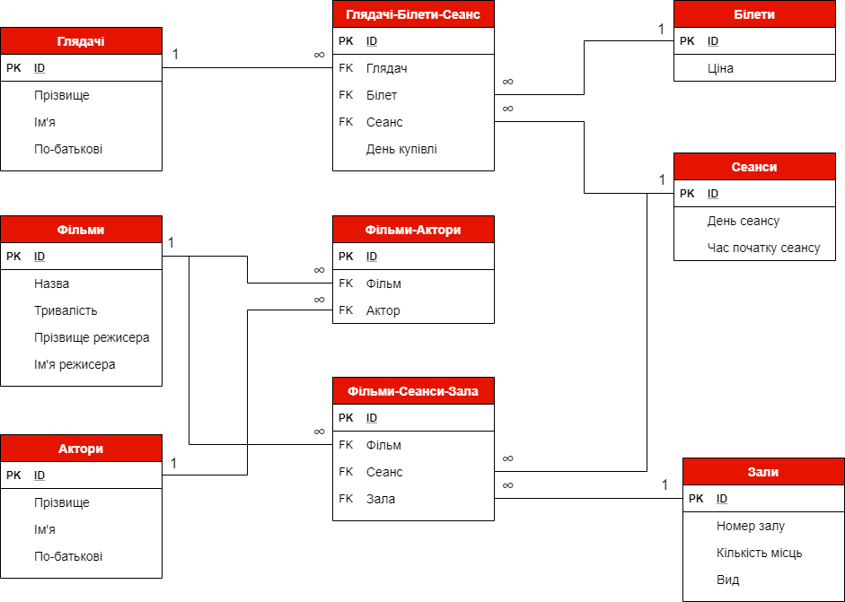

ЗВІТИ З ЛАБОРАТОРНИХ РОБІТ
З ДИСЦИПЛІНИ «РОЗРОБЛЕННЯ WEB-ЗАСТОСУВАННЬ»
Студенти групи ІА-94 Кузьменко Олександр Михайлович та Васильєв Денис Юрійович
Аналіз предметної області
База даних створюється для інформаційного обслуговування співробітників кінотеатрів. БВ повинна
містити дані про фільми, сеанси, зали, білети, глядачів та акторів.
Після аналізу предметної області можна виділити ряд сутностей, і приступити до проектування інфологічної моделі.
Виділимо базові сутності та зв'язки цієї предметної області:

Далі надамо класифікацію сутностей та зв'язків даної інфологічної моделі


Наступним кроком до повного аналізу предметної області є ER діаграма.
ER діаграма представляє собою візуальне зображення зв'язків з їхніх описом.
Така діаграма дозвляє замовнику бачити, яким чином пов'язані між собою сутності
замовленної бази даних.

Для кращого розуміння зв'язків необхідно додати їхній опис. Опис зв'язків представлений в наступній таблиці

Далі ми можемо перейти до побудови даталогічної моделі даних на основі інфологічного аналізу предметної області. Але перед
побудовою даталогічної діаграми спершу необхідно нормалізувати модель даних. В нашому випадку атрибут "ПІБ" є складеним та
порушує 1НФ. Щоб нормалізувати нашу базу даних, необхідно розділити кожен атрибут "ПІБ" або "ПІ" на відпідні атрибути
"Прізвище", "Ім'я" та "По-батькові". Приклад нормалізації однієї з таблиць наведено нижче

Після нормалізації всіх таблиць можемо приступити до даталогічного проектування. Даталогічна модель нашої бази даних
представлена далі
